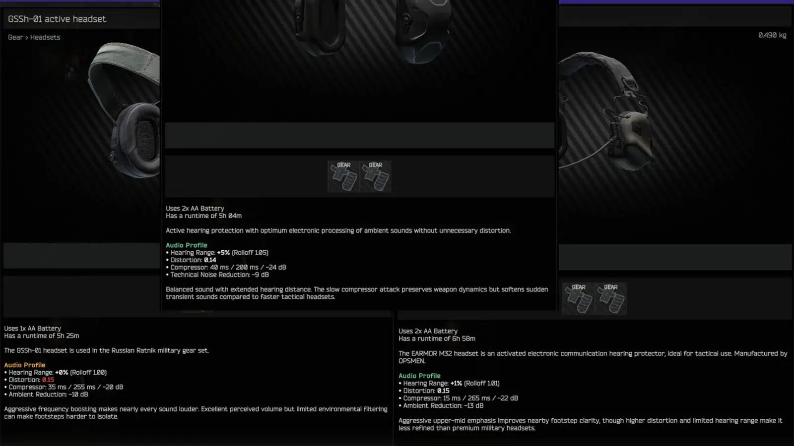

Better Headset Descriptions
- Downloads
- 8,220
- Favourites
- 20
- Mod lists
- 49
This mod will add the Hearing Range and Ambient Reduction stats of headsets into the item’s description.
Now you can easily compare the effects of headsets.
Pre-3.0 I used the stats found in this thread. Those metrics lacked a lot of context and were tested before a Tarkov audio change and modded headsets could not be easily tested and added to the config.
In 3.0, the headset stat/details are based on the server headset item description. Headset item templates contain a number of complicated stats related to audio processing. Such as, https://imgur.com/y0Ewkaj
I was not going to try and understand and compare these stats between every headset, so I went to DnSpy and copied every class related to headset audio processing and feed it to an LLM. I then provided every headset template description for it to compare, rank, and output a descriptive text which helps put the stats into game context. Here are the results:

I highly recommend UI Fixes to make the text fit appropriately.
This config contains headsets from WTT - Content Backport 1.0.7. but it is not required.
The LLM was very fiddly. I do not intend to go back and check it’s work but know they can make mistakes. If you have a modded headset you want to create a config for and you are reading this before the free AI collapse, you can provide the server item template to this chat and it may or may not give you one, idk how that works. https://chatgpt.com/share/6a5ccbfb-1158-83ea-aafa-d1656c654906
Version
3.0.0
- Total rewrite. See new description
- Added WTT - Content Backport headsets
Version
2.0.0
- Updated for 4.0
Version
1.0.0
No description was available in the snapshot.